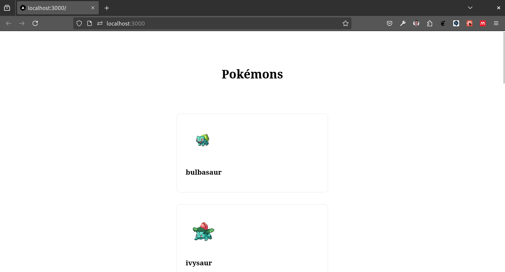

Laboratorio de Fetch con Next

En este laboratorio crearemos una aplicación de Next.js que obtiene datos de una API de Pokemons y los muestra en una lista.
Pasos
- Crear una nueva aplicación de Next.js
npx create-next-app@latest 1_laboratorio_fetch- Crear un archivo llamado lib/getsPokemons.tsx en la raíz del proyecto.
export async function getPokemons() {
const headers = new Headers({
"Content-Type": "application/json"
});
const requestOptions = {
method: 'GET',
headers: headers,
redirect: 'follow' as RequestRedirect
};
try {
const response = await fetch("https://pokeapi.co/api/v2/pokemon?limit=10", requestOptions);
if (!response.ok) {
throw new Error('Network response was not ok');
}
const data = await response.json();
const pokemonDetails = await Promise.all(
data.results.map(async (pokemon: any) => {
const res = await fetch(pokemon.url);
const details = await res.json();
return details;
})
);
return pokemonDetails;
} catch (error) {
console.error('Failed to fetch pokemons:', error);
return [];
}
}En el archivo mencionado, se ha creado una función llamada getPokemons. Esta función tiene la responsabilidad de realizar una petición a la API de Pokemons y obtener los primeros 10 pokemons.
La API de Pokemons es una interfaz de programación de aplicaciones que permite acceder a información relacionada con los pokemons, como sus nombres, habilidades, tipos, entre otros datos. Al realizar una petición a esta API, podemos obtener los datos de los pokemons de manera programática.
En el código proporcionado, la función getPokemons se encarga de manejar los posibles errores que puedan ocurrir durante la petición a la API. Si ocurre algún error, en lugar de lanzar una excepción o detener la ejecución del programa, la función retorna un arreglo vacío.
Esta estrategia de manejo de errores es útil porque permite que el programa continúe ejecutándose sin interrupciones, incluso si la petición a la API falla. En lugar de detenerse por completo, el programa puede tomar medidas alternativas o mostrar un mensaje de error al usuario.
En resumen, la función getPokemons es responsable de obtener los primeros 10 pokemons de la API de Pokemons y manejar los errores de manera adecuada. Esto garantiza que el programa pueda continuar ejecutándose sin problemas, incluso en caso de fallos en la petición.
- Crear un archivo llamado pages/index.tsx en la raíz del proyecto.
import styles from '../../styles/Home.module.css'; //<1>
import { useEffect, useState } from 'react'; //<2>
import { getPokemons } from '../../lib/getPokemons'; //<3>
export default function Home() { //<4>
const [pokemons, setPokemons] = useState<Array<any>>([]); //<5>
useEffect(() => { //<6>
const fetchPokemons = async () => { //<7>
console.log('Fetching pokemons...'); //<8>
const pokemonData = await getPokemons(); //<9>
console.log('Fetched pokemons:', pokemonData); //<10>
setPokemons(pokemonData); //<11>
};
fetchPokemons(); //<12>
}, []); //<13>
return (
<div className={styles.container}> //<14>
<main className={styles.main}> //<15>
<h1>Pokémons</h1> //<16>
<div className={styles.grid}> //<17>
{pokemons.map(pokemon => ( //<18>
<div key={pokemon.id} className={styles.card}> //<19>
<img src={pokemon.sprites.front_default} alt={pokemon.name} /> //<20>
<h3>{pokemon.name}</h3> //<21>
</div> //<22>
))}
</div>
</main>
</div>
);
}En el archivo anterior creamos un componente llamado Home que muestra una lista de los primeros 10 pokemons obtenidos de la API de Pokemons. Este componente es una página de la aplicación Next.js y se encuentra en el archivo pages/index.tsx.
El componente Home utiliza el hook useEffect para realizar una petición a la API de Pokemons cuando se monta. El hook useEffect se ejecuta después de que el componente se haya renderizado en el navegador. En este caso, se utiliza para obtener los datos de los pokemons y actualizar el estado del componente con la lista de pokemons obtenidos.
La función fetchPokemons es una función asíncrona que se define dentro del hook useEffect. Esta función se encarga de realizar la petición a la API de Pokemons utilizando la función getPokemons que hemos definido en el archivo lib/getPokemons.tsx. La función getPokemons devuelve una promesa que se resuelve con los datos de los pokemons obtenidos de la API.
Una vez que se obtienen los datos de los pokemons, se actualiza el estado del componente utilizando la función setPokemons. La función setPokemons es una función proporcionada por el hook useState que se utiliza para actualizar el valor de la variable de estado pokemons. Al actualizar el estado, el componente se vuelve a renderizar y muestra la lista de pokemons en la interfaz de usuario.
La lista de pokemons se muestra utilizando el método map de JavaScript. El método map se utiliza para iterar sobre cada elemento de un arreglo y devolver un nuevo arreglo con los resultados de aplicar una función a cada elemento. En este caso, se utiliza el método map para iterar sobre la lista de pokemons y generar un elemento de la lista para cada pokemon.
Cada elemento de la lista de pokemons se representa como un **** con una imagen y el nombre del pokemon. La imagen se muestra utilizando la propiedad sprites.front_default del objeto pokemon, que contiene la URL de la imagen del pokemon. El nombre del pokemon se muestra utilizando la propiedad name del objeto pokemon.
En resumen, el componente Home es responsable de obtener los datos de los primeros 10 pokemons de la API de Pokemons y mostrarlos en una lista en la interfaz de usuario. Utiliza el hook useEffect para realizar la petición a la API cuando se monta y el hook useState para almacenar y actualizar la lista de pokemons en el estado del componente. La lista de pokemons se muestra utilizando el método map y se representan como elementos **** con una imagen y el nombre del pokemon.
- Agregamos CSS
Creamos el archivo styles/Home.module.css en la raíz del proyecto con el siguiente contenido:
.container {
padding: 0 2rem;
}
.main {
min-height: 100vh;
padding: 4rem 0;
flex: 1;
display: flex;
flex-direction: column;
justify-content: center;
align-items: center;
}
.grid {
display: flex;
align-items: center;
justify-content: center;
flex-wrap: wrap;
max-width: 800px;
margin-top: 3rem;
}
.card {
margin: 1rem;
flex-basis: 45%;
padding: 1.5rem;
text-align: left;
color: inherit;
text-decoration: none;
border: 1px solid #eaeaea;
border-radius: 10px;
transition: color 0.15s ease, border-color 0.15s ease;
}
.card:hover,
.card:focus,
.card:active {
color: #0070f3;
border-color: #0070f3;
}
.card img {
max-width: 100%;
border-radius: 10px;
}En este archivo se definen los estilos CSS para la aplicación. Los estilos se aplican a los elementos HTML utilizando clases CSS y se utilizan para dar formato y diseño a la interfaz de usuario.
- Ejecutar la aplicación
npm run dev- Abrir la aplicación en el navegador http://localhost:3000
Resultado
Como puedes observar en la imagen anterior, la aplicación muestra una lista de los primeros 10 pokemons obtenidos de la API de Pokemons.
Conclusión
En este laboratorio, aprendimos cómo obtener datos de una API en una aplicación de Next.js y mostrarlos en una lista. También aprendimos cómo usar el hook useEffect para realizar una petición a la API cuando el componente se monta.
Además, vimos cómo manejar los posibles errores que puedan ocurrir durante la petición a la API utilizando un bloque try-catch. Esto nos permite manejar los errores de manera adecuada y evitar que la aplicación se detenga por completo en caso de fallos en la petición.
Para mostrar los datos de los pokemons en la lista, utilizamos el método map de JavaScript para iterar sobre la lista de pokemons y generar un elemento de la lista para cada pokemon. Cada elemento de la lista se representa como un **** con una imagen y el nombre del pokemon.
En resumen, este laboratorio nos ha enseñado cómo obtener y mostrar datos de una API en una aplicación de Next.js, así como cómo manejar los errores de manera adecuada. Estos conceptos son fundamentales para el desarrollo de aplicaciones web que interactúan con servicios externos y proporcionan una experiencia de usuario fluida y sin interrupciones.
Ejercicio
Desarrollar una aplicación en Next.js que utilice la función fetch para obtener datos de una API externa de Pokemons y mostrarlos dinámicamente en una lista.
:::